<title>Foyer Arch Trial</title>
<meta name="claude:viewport-fit-sides" content="cover">
<link rel="stylesheet" href="https://fonts.googleapis.com/css2?family=Barlow+Condensed:wght@500;600&family=Barlow:wght@400;500;600&display=swap">
<style>
/* Layout: same contact-sheet language as the wall-grid pilot page. Film shots each get a film/render slider, then the camera check, then the inside views. */
:root { --paper: #eef1ef; --sheet: #fbfcfb; --ink: #1c2321; --muted: #5d6864; --rule: #cfd6d3; --ok: #2f8f5b; --warn: #b7791f; --accent: #2457c5;
  --display: "Barlow Condensed", "Arial Narrow", sans-serif; --body: "Barlow", system-ui, sans-serif; }
@media (prefers-color-scheme: dark) { :root:not([data-theme="light"]) { --paper: #111514; --sheet: #171c1b; --ink: #e2e8e5; --muted: #95a29d; --rule: #2c3533; --ok: #4fbf84; --warn: #e0a84a; --accent: #7aa2ff; color-scheme: dark } }
:root[data-theme="dark"] { --paper: #111514; --sheet: #171c1b; --ink: #e2e8e5; --muted: #95a29d; --rule: #2c3533; --ok: #4fbf84; --warn: #e0a84a; --accent: #7aa2ff; color-scheme: dark }
body { background: var(--paper); color: var(--ink); font: 16px/1.55 var(--body); padding-left: max(16px, env(safe-area-inset-left, 0px)); padding-right: max(16px, env(safe-area-inset-right, 0px)); padding-block: 20px 40px; }
main { max-width: 1100px; margin: 0 auto; display: grid; gap: 28px; }
h1 { font: 600 34px/1.1 var(--display); margin: 0; text-wrap: balance; }
h2 { font: 600 22px/1.2 var(--display); margin: 0 0 10px; letter-spacing: .01em; text-wrap: balance; }
p { margin: 0; max-width: 68ch; }
.lead { color: var(--muted); margin-top: 6px; }
.block { display: grid; gap: 10px; }
.checks { display: grid; grid-template-columns: repeat(auto-fit, minmax(170px, 1fr)); gap: 10px; }
.checks div { background: var(--sheet); border: 1px solid var(--rule); border-top: 3px solid var(--ok); border-radius: 3px; padding: 8px 10px; }
.checks div.warn { border-top-color: var(--warn); }
.checks b { font: 600 22px var(--display); display: block; font-variant-numeric: tabular-nums; }
.checks span { font-size: 13px; color: var(--muted); }
figure { margin: 0; background: var(--sheet); border: 1px solid var(--rule); border-radius: 3px; overflow: hidden; }
figure img { display: block; width: 100%; height: auto; max-width: 100%; }
figcaption { font-size: 13.5px; color: var(--muted); padding: 6px 10px; }
figcaption b { color: var(--ink); font-weight: 600; }
.stack { position: relative; aspect-ratio: 1280 / 705; max-width: 100%; }
.stack img { position: absolute; inset: 0; width: 100%; height: 100%; }
.stack .top { opacity: .5; }
.slider { display: flex; align-items: center; gap: 10px; padding: 8px 10px; font: 600 12px var(--display); letter-spacing: .08em; text-transform: uppercase; color: var(--muted); }
.slider input { flex: 1; min-width: 0; accent-color: var(--accent); }
.slider input:focus-visible { outline: 2px solid var(--accent); outline-offset: 2px; }
.pair { display: grid; grid-template-columns: 1fr 1fr; gap: 8px; }
@media (max-width: 700px) { .pair { grid-template-columns: 1fr; } }
.tag { font: 600 11px var(--display); letter-spacing: .08em; text-transform: uppercase; color: var(--muted); }
ul { margin: 0; padding-left: 20px; max-width: 68ch; }
li + li { margin-top: 4px; }
</style>

<main>
  <header>
    <h1>Foyer Arch Trial</h1>
    <p class="lead">The back of the foyer rebuilt from the film. Each film shot's camera was worked out from flight 1's steps alone, so the arch and picture wall are a prediction that can miss. The renders below are taken from those same cameras. TRIAL until you walk it: it is loaded in your editor (Greybox_Upstairs, in Play).</p>
  </header>

  <section class="block">
    <h2>What the film says</h2>
    <div class="checks">
      <div><b>3 ft 5 in</b><span>arch opening (two cameras: 40 and 42 in)</span></div>
      <div><b>7 ft 1 in</b><span>arch crown (both cameras within ⅛ in)</span></div>
      <div><b>6 ft 3 in</b><span>where the curve starts</span></div>
      <div><b>within 2 in</b><span>the rear door, which the solve never saw, lands where Marina's plan has it</span></div>
      <div class="warn"><b>7 ft 1 in</b><span>underside of the landing's front edge (was 7 ft 5 in from Marina)</span></div>
    </div>
  </section>

  <section class="block" id="film">
    <h2>Film against the trial, from the film's own cameras</h2>
    <p class="tag">Drag to fade from the film to the render</p>
    <figure>
      <div class="stack">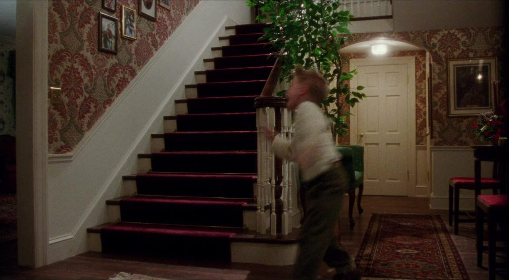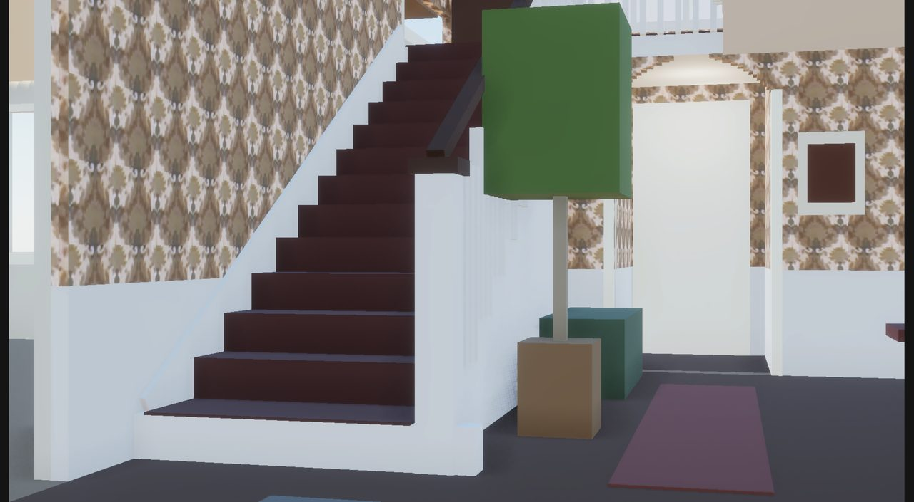</div>
      <label class="slider" for="s2677">Film <input id="s2677" type="range" min="0" max="100" value="50"> Render</label>
      <figcaption><b>2677.</b> Arch, rear door, picture frame and wainscot sit on the film's. The tree prop hides the arch's left side, as Kevin's tree does.</figcaption>
    </figure>
    <figure>
      <div class="stack">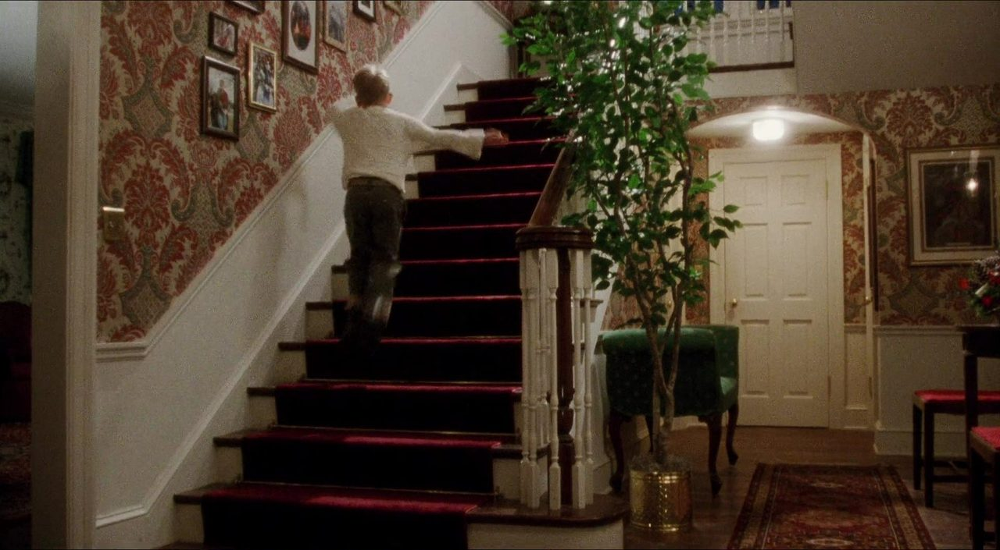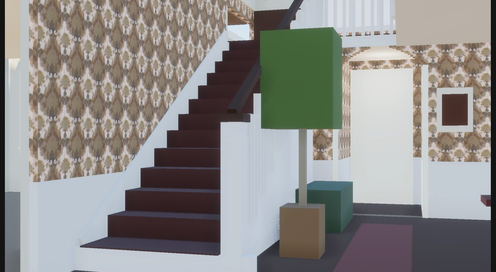</div>
      <label class="slider" for="s3888">Film <input id="s3888" type="range" min="0" max="100" value="50"> Render</label>
      <figcaption><b>3888.</b> A separate setup; its camera was solved independently and agrees with 2677 on the arch to 2 in.</figcaption>
    </figure>
    <figure>
      <div class="stack">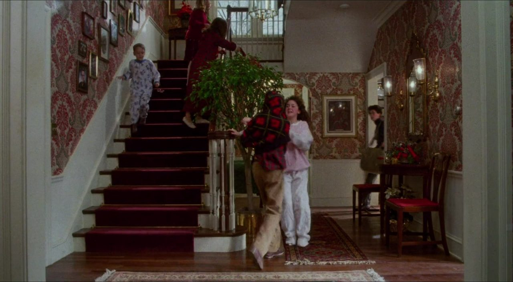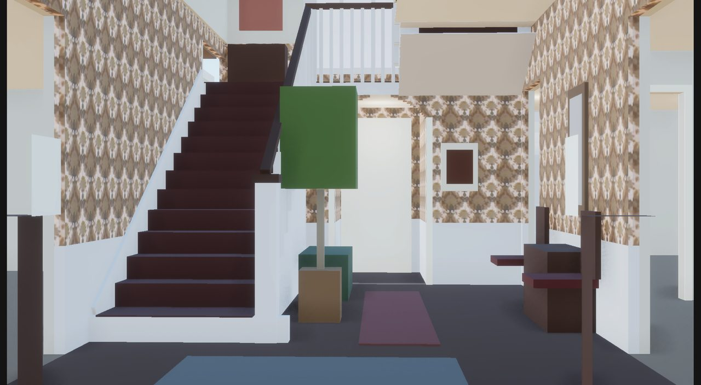</div>
      <label class="slider" for="s1616">Film <input id="s1616" type="range" min="0" max="100" value="50"> Render</label>
      <figcaption><b>1616.</b> Shot from outside the front door. The stair and arch agree; the doorway where Buzz stands (the right-hand wall) reads 4–9 in further in than we build. Not changed here: see the open items.</figcaption>
    </figure>
  </section>

  <section class="block">
    <h2>How the cameras were checked</h2>
    <p>Yellow: flight 1's step edges. Only the wall-side ends were used to place the camera; the open-side ends were held back and still land on the balusters. Green: the trial's arch, picture-wall top and rear door drawn through the same camera.</p>
    <div class="pair">
      <figure>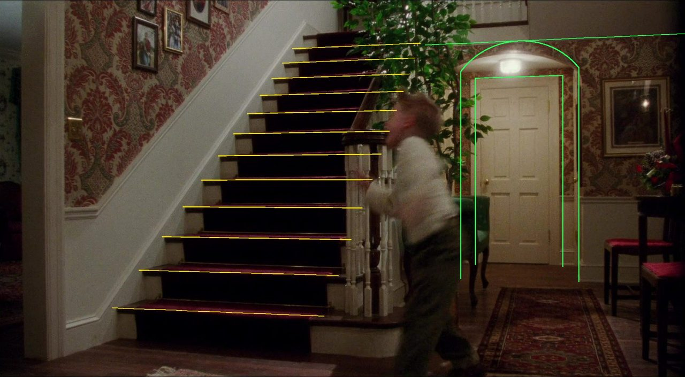<figcaption><b>2677</b></figcaption></figure>
      <figure>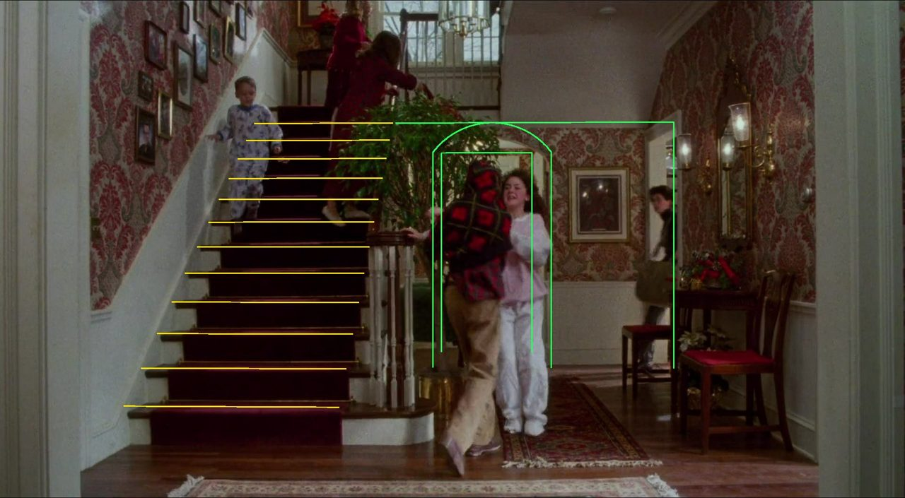<figcaption><b>1616</b></figcaption></figure>
    </div>
  </section>

  <section class="block">
    <h2>Before and after, inside</h2>
    <p class="tag">Left: before · Right: the trial</p>
    <div class="pair">
      <figure>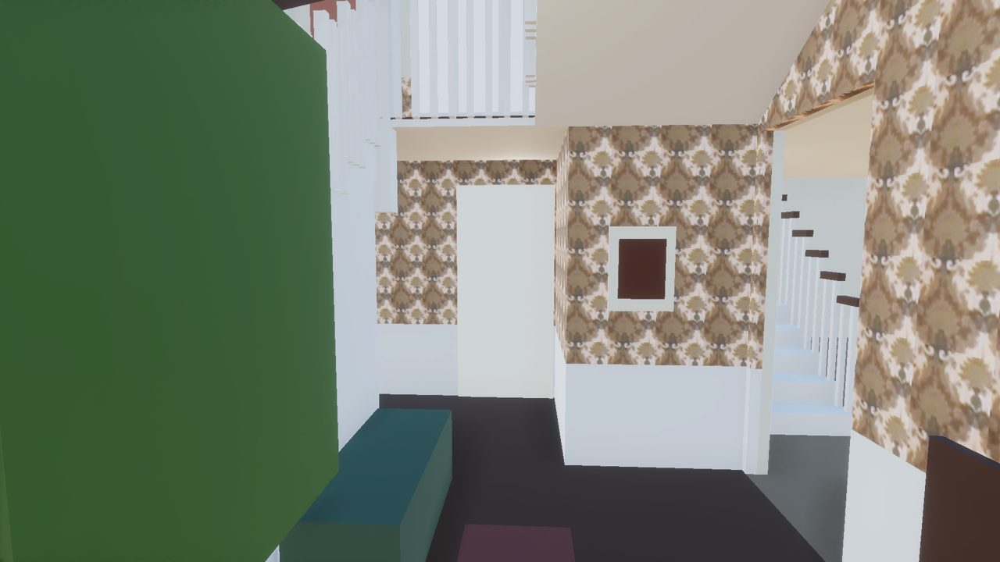<figcaption><b>Before.</b> An open gap under the landing, as in Marina's model.</figcaption></figure>
      <figure>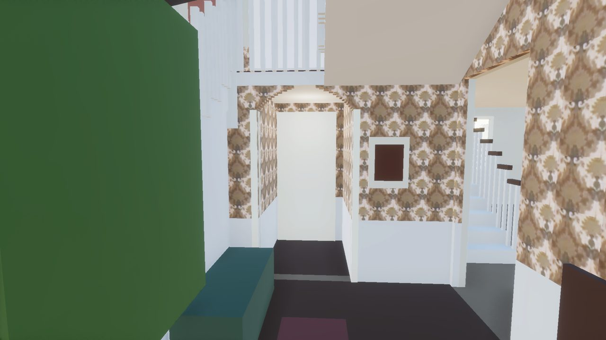<figcaption><b>Trial.</b> The arch in the back wall, the rear door through it.</figcaption></figure>
      <figure>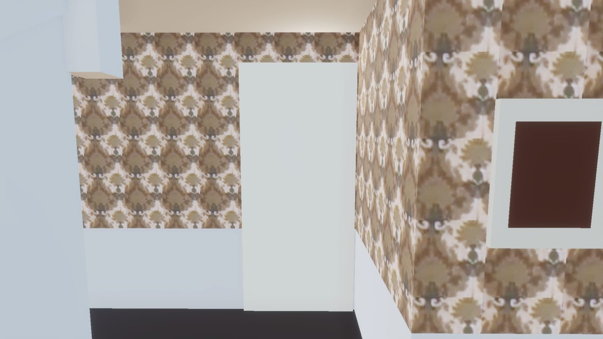<figcaption><b>Before.</b></figcaption></figure>
      <figure>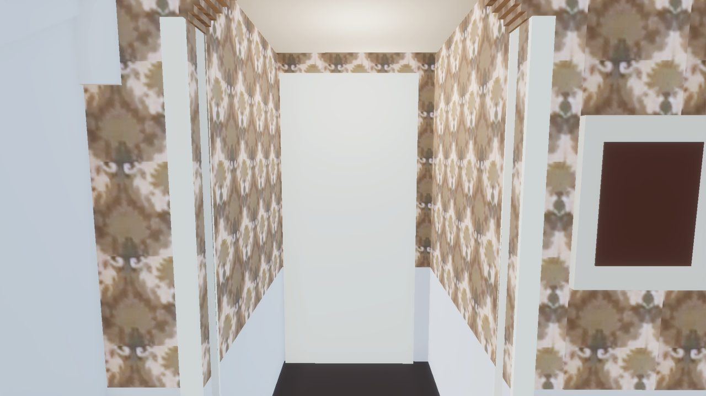<figcaption><b>Trial.</b> Cased, papered inside like the film. The curve is stepped in the grey-box.</figcaption></figure>
    </div>
  </section>

  <section class="block">
    <h2>What to look at when you walk it</h2>
    <ul>
      <li>The arch from the front door and from the stair foot: does it read like the film?</li>
      <li>Walk through it into the passage to the rear door (still a closed prop).</li>
      <li>The landing's front edge now sits 4 in lower (7 ft 1 in), from the film. Flight 2's underside is unchanged, so it still clears the kitchen opening you flagged.</li>
    </ul>
  </section>

  <section class="block">
    <h2>Open items</h2>
    <ul>
      <li>The foyer's right-hand wall (with the kitchen doorway) may sit 4–9 in further into the foyer than we build. Two frames say so; the rest of the house rests on that line, so I left it. Next: solve 10673 and 3175, which see that wall, before moving it.</li>
      <li>A third ruler (10673, read with its rear door as 80 in) puts the landing edge at 6 ft 10 in, 3 in lower than built. That is inside its error, but it leans low.</li>
      <li>Two tiny ledges (⅜ in and ¼ in) at interim upstairs stopgaps are now on the known list; they go with the stair-hall rebuild.</li>
    </ul>
  </section>
</main>

<script>
document.querySelectorAll(".slider input").forEach(function (r) {
  var top = r.closest("figure").querySelector(".top");
  function set() { top.style.opacity = r.value / 100; }
  r.addEventListener("input", set); set();
});
</script>
